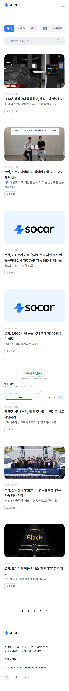

AS-IS
블로그 채널 부재
보도자료·서비스·테크·문화 콘텐츠가 여러 페이지에 분산
5개 카테고리
고정 탭 채널
전체·서비스·테크·문화·보도자료 5개 카테고리를 상단 고정 탭으로 배치해 진입 직후 원하는 영역으로 이동할 수 있도록 했습니다.
메인 진입 영역까지
쏘카 코퍼레이트 사이트에 신설한 블로그 채널, 그리고 메인 페이지의 블로그 진입 영역까지 함께 디자인한 작업입니다. 쏘카 디자인 시스템은 그대로 상속하고, 채널 구조와 진입 동선만 새로 설계했습니다.
블로그 채널이 없었고, 보도자료·서비스·테크·문화 등 성격이 다른 콘텐츠가 여러 페이지에 흩어져 있었습니다. 메인 페이지에서 블로그로 가는 진입 동선도 없었습니다. 디자인 시스템은 그대로 상속하고, 진입 동선과 카드 위계만 새로 정리했습니다.
보도자료·서비스·테크·문화 콘텐츠가 여러 페이지에 분산
전체·서비스·테크·문화·보도자료 5개 카테고리를 상단 고정 탭으로 배치해 진입 직후 원하는 영역으로 이동할 수 있도록 했습니다.
코퍼레이트 메인에서 블로그로 가는 진입 동선이 없는 상태
블로그 채널만이 아니라 쏘카 메인 페이지의 블로그 진입 영역도 함께 디자인했습니다.
카테고리마다 카드 비율·여백이 달라 시각 균형이 깨질 우려가 있음
카테고리가 늘어나도 일관성이 유지되는 카드·리스트 위계와 반응형 규칙을 정리해 운영 단계에 인계했습니다.
PC와 모바일 디자인을 동일한 카드 위계로 정리했습니다.


쏘카 코퍼레이트 사이트의 기존 시스템을 그대로 상속. 쏘카 시그니처 컬러 #02D060와 큰 헤딩 위계를 유지해 메인 ↔ 블로그 사이의 이질감을 제거했습니다.
Pretendard · Bold · Semi-bold · Regular